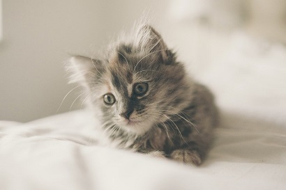
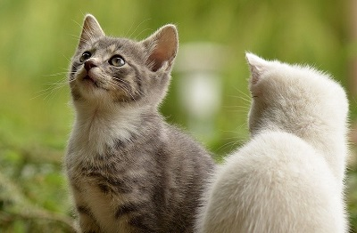
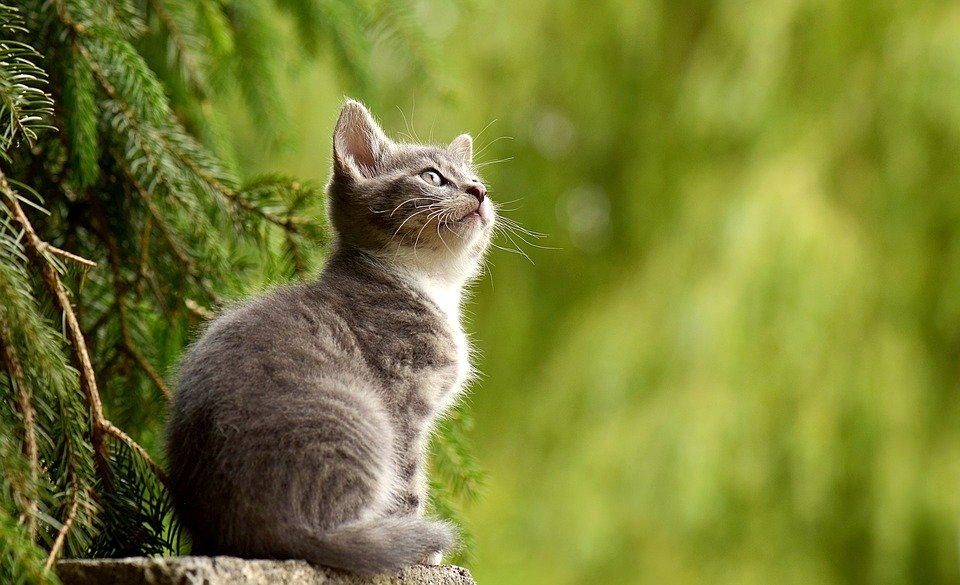
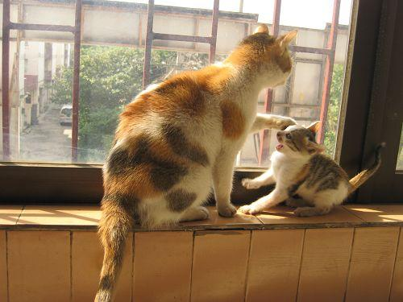
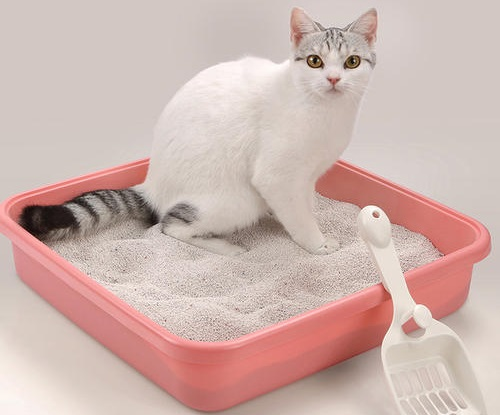

猫咪是否长寿，除了品种决定，这4个因素也很重要
猫咪是很受大家喜爱的宠物，但是有个不得不面对的问题，那就是猫咪的寿命相对于人类而言较短，即使一生无病，平均年龄也仅有12---22年。
面对猫咪寿命走到终结时，我们总是很难过，总希望猫咪可以更加长寿一些，多陪伴一段时间。有些人认为猫咪是否长寿，是由品种决定的，那真的是这样吗？

如果想养猫，我劝你别养两只以上，不然你就没有猫了
猫咪虽可爱，但是养多了不见得是开心的事情，不仅要承担经济上的负担，而且还要接受各种惊喜，猫咪的冷落、顽皮和闹腾。如果你有耐心，爱心和财力，那可以多养几只，也能平添不少乐趣。

猫咪丢了怎么办？在这个地方找，80%的概率可以找回来
猫咪就像一个不会说话的小孩子，虽然我们不是它们的亲生父母，但是作为主人，一个有责任心的铲屎官，细心一些，多关心一些是很有必要的。相信主人的爱是防止猫咪走丢最有力的法宝吧。

你的猫半夜蹦迪吗？猫友：自从有了猫再也没有睡过懒觉
其实养猫就像养个小宝宝一样，总要经历一段无法安眠的夜晚，但是熬过这一段时间，你会发现这个成长的过程还是很幸福的。 无论是对于猫咪，还是自己，总能学到点什么，感悟点什么。
没有猫之前，你觉得猫咪好可爱，好像拥有一只，当你有猫以后，你会发现，你的睡眠质量越来越差，明明同样的睡眠时间，却总是睡不好，究其原因还是因为猫咪太闹腾，半夜蹦迪导致的。

该如何为猫咪选择猫砂盆？请从这三个方面入手
只要你准备一个猫砂盆，教猫咪用几次，它就会自己用了，我们只需要在它们每次方便之后，做一个合格的铲屎官即可。空间大小不同年龄段的猫咪，体型差异较大尤其是幼猫和成年猫的区别，所以在选择猫厕所之前 应该考虑猫咪的年龄、身形。